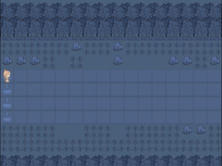
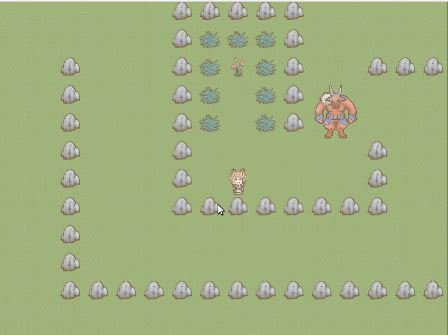
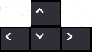

In a dark and foreign land, there is a flower which can cure any disease. This game is about a girl who wants to bring happiness back to her village. An unknown virus has attacked her village, leaving only 1/8 of population. Having no choice left, she travels alone to the forbidden land.
Unfortunately, this is not a safe journey...
 Objectives
You are the choosen one, your jobs is to obtained the golden flower while traveling in a maze like area safely.
by safely means you must avoid the guardians which can kill you instanly.
as the choosen one you have the ability to camouflage yourself as a stone, beware you have only maximum 10 seconds to do so.
Controls:
- Directional buttons .
- Spacebar for camouflage into stone .
Credits
@Anton Setiawan Polyglot software developer, github weekend enthusiast, dark souls player and skyrim veteran.
@Didik.P yours truly asisstant,(below) average joe programmer, PES lover.
@Arif Pribadi Quick drawer, excellent image creator.